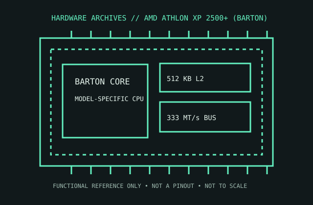

[ AMD GENERATIONS // IDENTIFIED PROCESSOR ]
AMD Athlon XP 2500+ (Barton)
The Barton-core Athlon XP 2500+ is an actual 1.833 GHz desktop CPU; “2500+” is AMD’s performance rating, not its clock speed.

MODEL IDENTIFICATION: AMD Athlon XP 2500+ (Barton). Compare the printed part number, speed grade, package, cache configuration, and stepping with the cited documentation; do not transfer one variant’s limits to another.
Recorded specifications
| Cataloged part | AMD Athlon XP 2500+ (Barton) |
|---|---|
| Era / family | AMD Athlon XP / Barton, 2003; AXDA2500DKV4D model. |
| Key specifications | 1.833 GHz; 333 MT/s double-data-rate front-side bus; 128 KB L1; 512 KB L2; 1.65 V nominal core for the cited desktop OPN; Socket A; 68.3 W maximum thermal power for this model. |
| Interface / fit | Requires Socket A motherboard whose CPU list/BIOS supports Barton and the 166 MHz clock (333 MT/s bus). Confirm VRM current capacity, cooler and memory/platform settings. |
| Variant distinction | Athlon XP 2500+ Thoroughbred and Barton parts differ in cache/process/OPN; this record specifies the 512 KB Barton AXDA2500DKV4D, not every 2500+ variant. |
Compatibility and variants
- Requires Socket A motherboard whose CPU list/BIOS supports Barton and the 166 MHz clock (333 MT/s bus). Confirm VRM current capacity, cooler and memory/platform settings.
- Athlon XP 2500+ Thoroughbred and Barton parts differ in cache/process/OPN; this record specifies the 512 KB Barton AXDA2500DKV4D, not every 2500+ variant.
- Confirm the system manufacturer’s exact processor support list, firmware minimum, board revision, power/thermal envelope, and memory requirements before installation.
Service and archival notes
Record OPN, stepping and unlocked/locked status; inspect the exposed die for damage, and retain correct Socket A cooler clip. Verify BIOS identifies the Barton and stock bus before testing.
Preserve provenance and a record of the exact marking, condition, tested board/platform, firmware, cooling, memory configuration, and test conditions. Separate published specification limits from observations made on a particular surviving system.
Sources & further reading
- AMD Athlon XP Processor Model 10 Data Sheet — Barton product familySpecific model or manufacturer-family reference; verify revision and configuration against the device marking and platform documentation.
- AMD Athlon XP 2500+ (Barton) model/OPN cross-referenceSpecific model or manufacturer-family reference; verify revision and configuration against the device marking and platform documentation.
- AMD Athlon XP launch history and model contextSpecific model or manufacturer-family reference; verify revision and configuration against the device marking and platform documentation.
Third-party reference pages and document archives are finding aids. The matching manufacturer datasheet, product specification, and board support documentation take precedence for the exact revision and host.